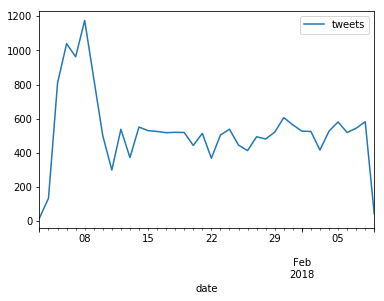

Tweets By Day
In [7]:
datestring_created_at = { "dateString" : "$created_at"}
date_from_string = {"$dateFromString" : datestring_created_at }
date_to_id = {
PROJECT : {
"_id" : 0,
"year" : {"$year" : {"date" : date_from_string}},
"month" : {"$month" : {"date" : date_from_string}},
"day" : {"$dayOfMonth" : {"date" : date_from_string}},
}
}
group_by_date = {
GROUP : {
"tweets" : { "$sum" : 1 },
"_id" : {
"year" : "$year",
"month" : "$month",
"day" : "$day"
},
}
}
In [8]:
def dictionary_to_datestring(x):
month = x['month']
day = x['day']
year = x['year']
return "{}-{}-{}".format(month, day, year)
In [9]:
cursor = collection_reference.aggregate([
date_to_id,
group_by_date
])
daily_tweets = pd.DataFrame(list(cursor))
In [10]:
datestrings = daily_tweets['_id'].apply(dictionary_to_datestring)
daily_tweets['date'] = pd.to_datetime(datestrings)
daily_tweets.drop('_id', axis=1, inplace=True)
daily_tweets.sort_values('date', inplace=True)
daily_tweets.set_index('date', inplace=True)
daily_tweets.plot()
Out[10]:
<matplotlib.axes._subplots.AxesSubplot at 0x7f33956f1f28>
